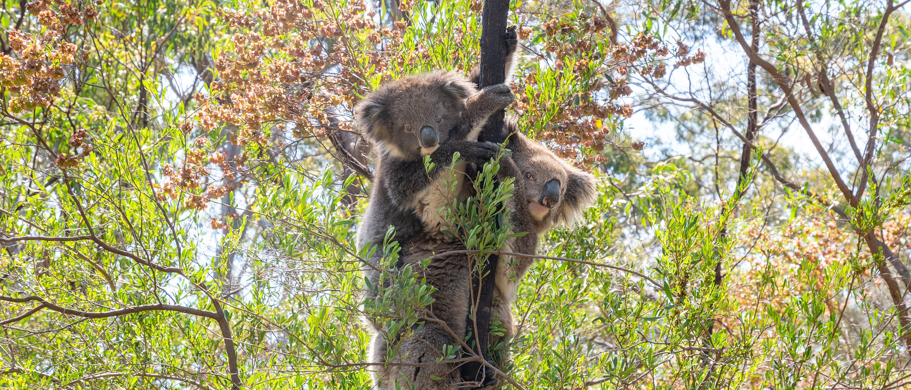
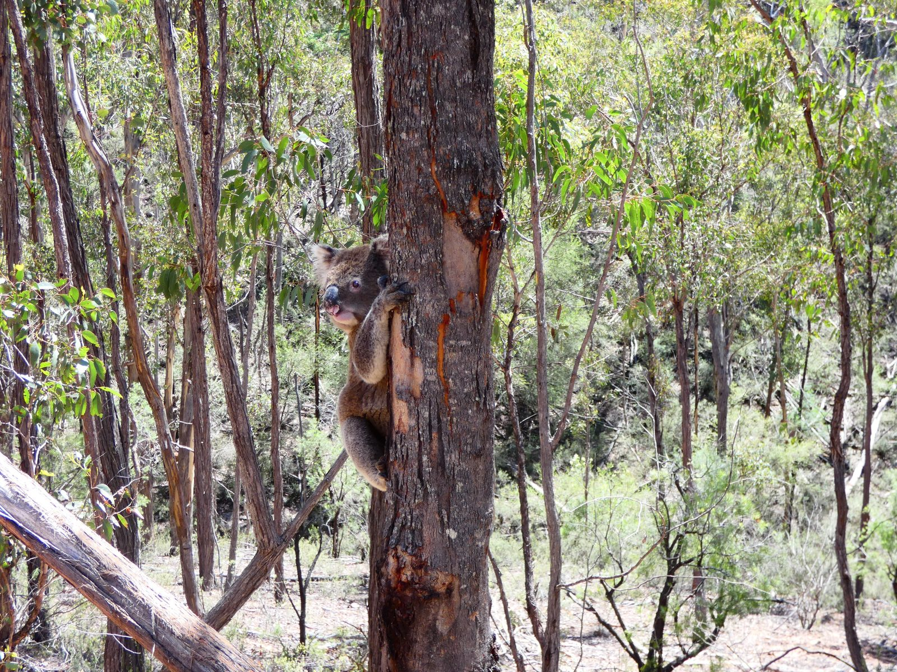
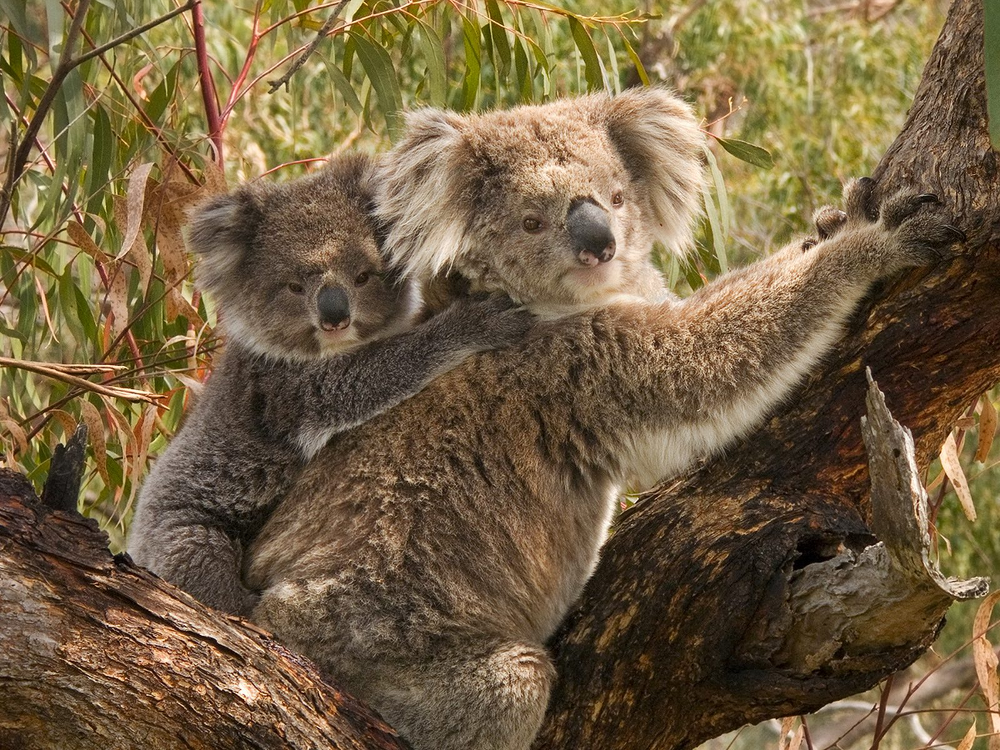
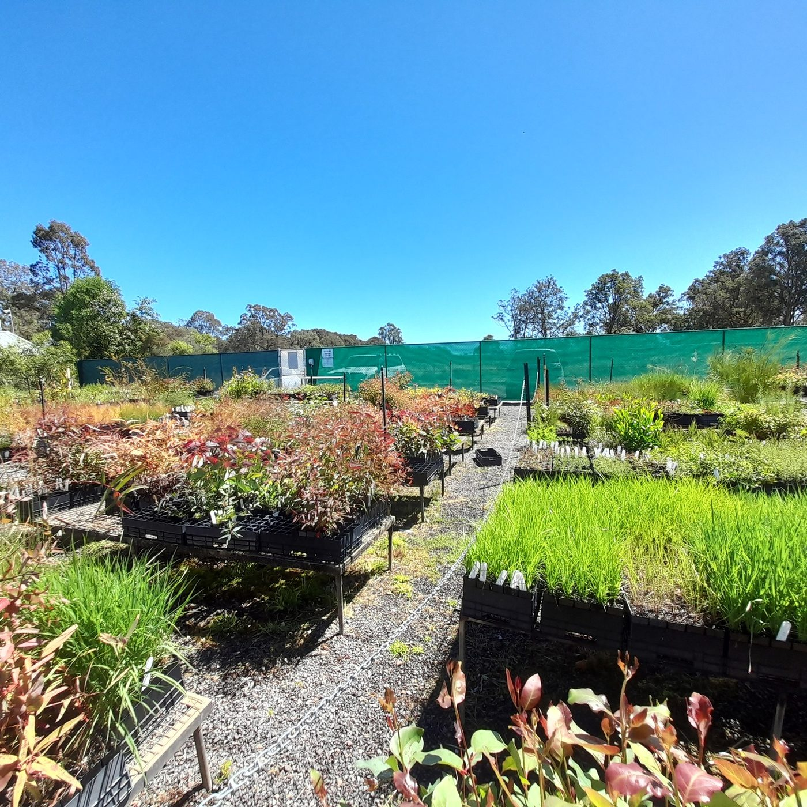
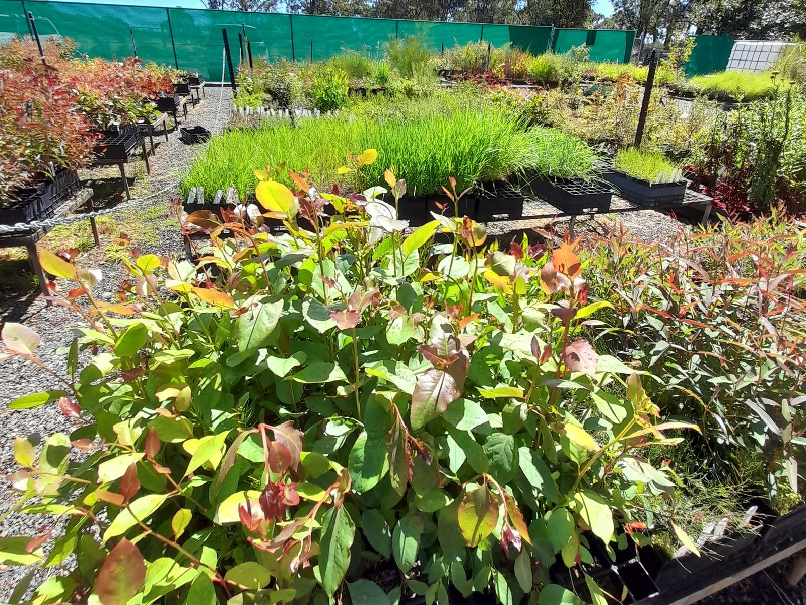
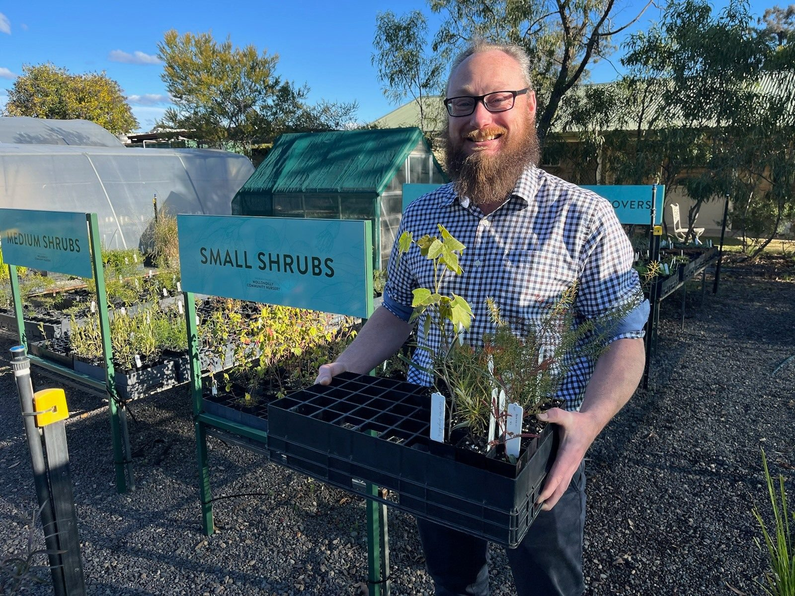
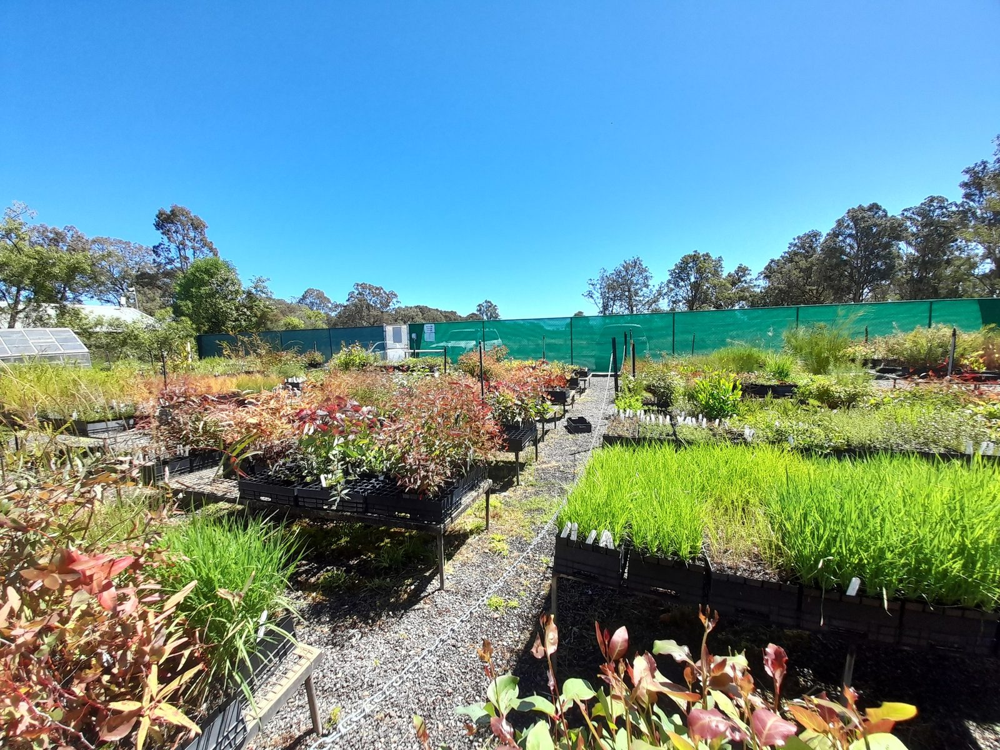
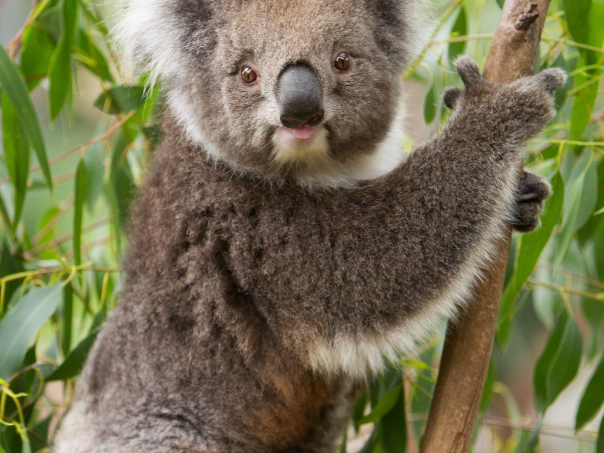
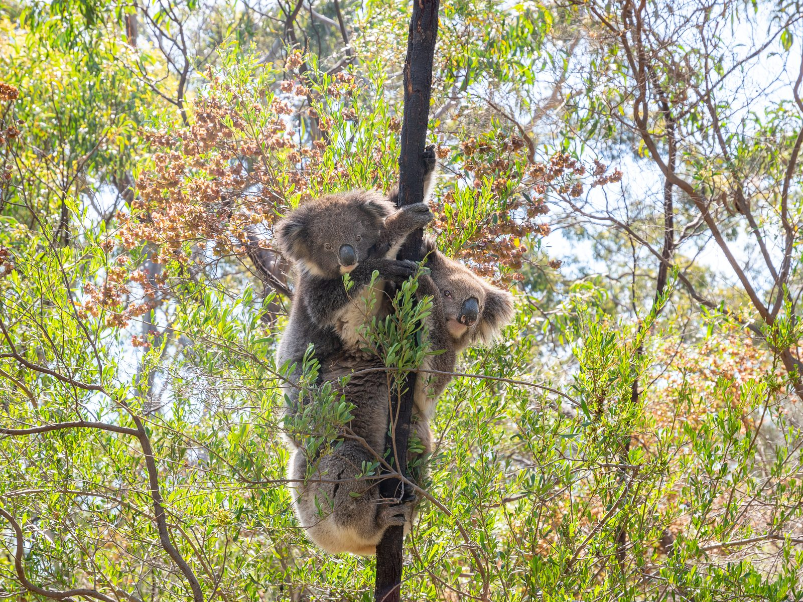

Healing the Land
NSW
Healing the Land
NSW

Healing the Land
Cultivating Koala Habitat
The first koala a European ever wrote down was seen on the Bargo River in 1798. Two centuries later, a nursery run largely by the people who live there is growing the trees that will keep koalas on the same stretch of water.
2,000Local plants in the groundTwice the number the grant originally budgeted for, planted along the Bargo River corridor.
95%Still aliveSurvival rate recorded at the end of the project, after weed control, guards, stakes and watering.
4Hectares restoredPrimary koala habitat corridor cleared of woody weeds and replanted with local species.
Figures from Wollondilly Shire Council’s final project report to the Foundation for National Parks & Wildlife, August 2023.

The problem
A koala needs a canopy it can cross without coming down
Koalas eat one thing and live in one place, and both of those are eucalypts. That specialisation has served them well for a very long time, but it leaves almost no room to adapt when the trees go. Clearing, disease and a warming climate have all pulled at the population, and in February 2022 the koala was listed as endangered under national environmental law across Queensland, New South Wales and the Australian Capital Territory.
Wollondilly took the loss directly. The 2019 and 2020 bushfires burned through the shire and along the Bargo River, which is a primary koala habitat corridor, taking canopy, shelter and the connections between the two. What came back afterwards was not only native regrowth. Japanese honeysuckle, blackberry and privet moved into the burnt ground, and left alone they would have held the riverbank for a generation.

Why it matters
The koala is quietly running the forest it sits in
It is easy to read a koala as a passenger in the canopy, asleep for twenty hours out of every twenty-four. What it is doing in the other four is managing the forest. By feeding steadily on the upper canopy it keeps that canopy open, and light reaches the forest floor that would otherwise never get there.
The same appetite thins out the excess growth that would later carry a fire. What the koala does not digest falls to the ground and feeds the soil through the wet season, and the leaves it drops and damages become available to the insects working at ground level. Take the koala out of a eucalypt forest and you have not simply removed an animal from it. You have removed the thing that was keeping it in balance.

The approach
The trees were grown four kilometres from where they were planted
The Robin Davies Wollondilly Community Nursery sits on Wonga Road in Picton, behind the animal shelter, and it has been propagating local native plants for two decades on volunteer hands. Seed is collected locally, so what goes out is the same provenance as the bush around it and stands a real chance of surviving there. Any Wollondilly resident can collect five free plants a quarter, and anyone doing environmental restoration on their own land can take more.
The Foundation for National Parks & Wildlife backed the nursery and the planting through two grants under what is now our Landscape Resilience Program, known at the time as the Bushfire Recovery Program. The first paid for water efficiency upgrades to the irrigation, refitted propagation tunnels with new heat beds, benches and covers, and plant identification signage, then funded two further years to put 25,000 free plants into the community’s hands. The second put contractors and volunteers onto the Bargo River Reserve.
Council looks forward to working with FNPW to care for the local environment and engage with our community to look after the incredible natural surroundings that we have here in Wollondilly.
On the ground
Weeding first, then twice as many trees as anyone planned for
Planting into weed-choked ground is a way of wasting seedlings, so the first money went on removal rather than planting. Contractors worked through the woody weeds along the riverbank, then prepared the site with spot spraying, brush cutting and hand removal of seedlings, and augered the planting holes before anyone arrived with a tray.
Partway through, Wollondilly Shire Council won separate funding for seed collection, which freed the five thousand dollars this grant had set aside for it. Rather than return the money, Council asked to move it into weed control and planting, and we agreed. The result was double the trees. The grant was written for 1,000 plants and 2,000 went into the ground, across four hectares instead of two.
Ninety-five per cent of them were still alive when the project closed. That number is the one worth holding onto, because it is the difference between planting trees and growing a forest, and it comes from guards, stakes, mats, watering and a cleared site rather than from luck.



The people
Thirty people, one hundred hours, three days that mattered
Three planting days carried the project. One was a community day for Wollondilly residents, and two were corporate volunteering days with teams from Inghams. Thirty people took part and contributed around a hundred hours between them, and every one of them left knowing why the weeds were being pulled and what the site was for.
The same partnership put a Macquarie Group team into the Bushtucker Garden at Stonequarry Creek in Picton, where they cleared a hundred square metres of weeds and planted 220 local natives in two hours. Different site, same principle.
That is the quiet argument for doing restoration this way. A contractor can plant a riverbank faster, but only the people who live beside it will still be watching it in five years.
What went in
Not any eucalypt will do
Koalas are particular, and the trees they will actually feed on depend on the soil those trees are standing in. Wollondilly holds two vegetation types that carry the right species, Cumberland Plain Woodland and Shale Sandstone Transition Forest, and both are listed as Endangered Ecological Communities in their own right. The riparian country along the Bargo River is what joins the remnants together, which is why the river matters as much as the woodland does.
The primary food species grown for this corridor are the ones a Wollondilly koala will choose first.
- Cabbage Gum Eucalyptus amplifolia
- Parramatta Red Gum Eucalyptus parramatensis
- Swamp Mahogany Eucalyptus robusta
- Forest Red Gum Eucalyptus tereticornis
- Ribbon Gum Eucalyptus viminalis
Secondary and supplementary species go in alongside them, from Grey Gum and Yellow Box to the stringybarks, because a corridor that offers one meal is not a corridor. It is a dead end with good intentions.


What happens next
The nursery does not stop when the grant does
Four hectares is a start in a shire that lost a great deal more than that, and the nursery has the seed, the benches and the volunteers to keep going. What it needs is the next site and the stock to plant it with.
This is unusually good ground for a corporate volunteering day or a funding partner, because the results are legible. Trees grown four kilometres away, planted by hand in a named reserve, counted afterwards, and ninety-five per cent of them still standing. There is very little distance between what a supporter pays for and what is there at the end of it.
If your organisation would like to fund or volunteer on the next round of planting in Wollondilly, write to office@fnpw.org.au.
With thanks
Project partners
Delivered with Wollondilly Shire Council and the Robin Davies Wollondilly Community Nursery, with planting days supported by corporate volunteering teams, under the Foundation for National Parks & Wildlife Landscape Resilience Program.
Related reading
More on this work.
From the newsroom
Growing koala food trees for survival
Why local provenance seed matters when you are replanting a food source for a fussy eater.
Read the story →
Healing the Land
Native plant nurseries
The wider network of community-led nurseries growing recovery stock across New South Wales, Victoria, South Australia and the ACT.
See the project →
More from this pillar
Related projects


Help fund work like this.
Every FNPW project is powered by donations, bequests and partnerships.